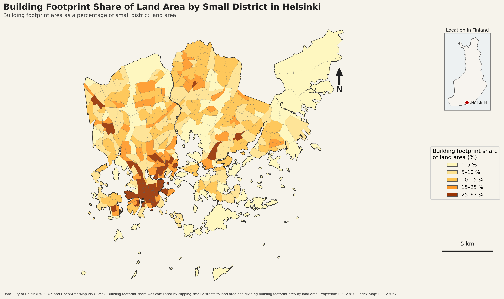
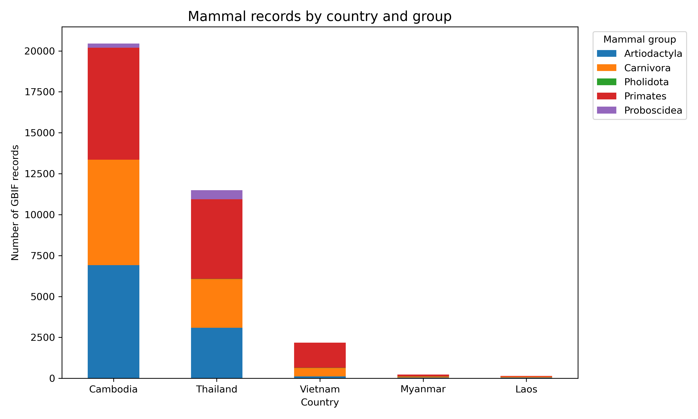
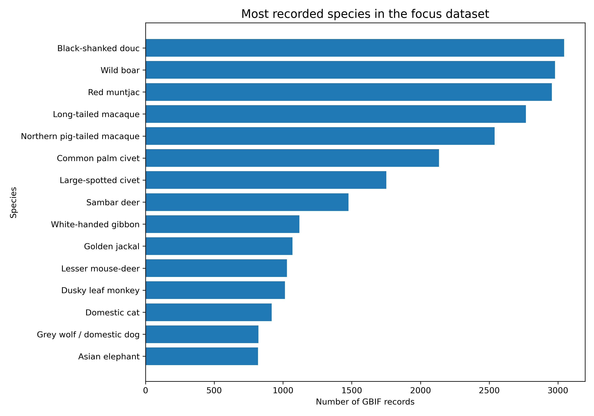
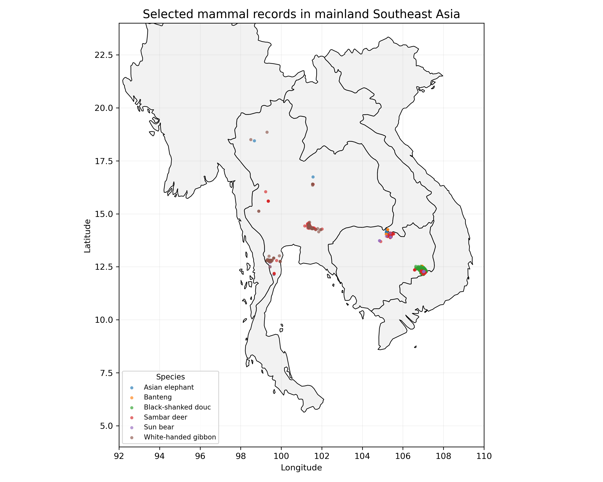
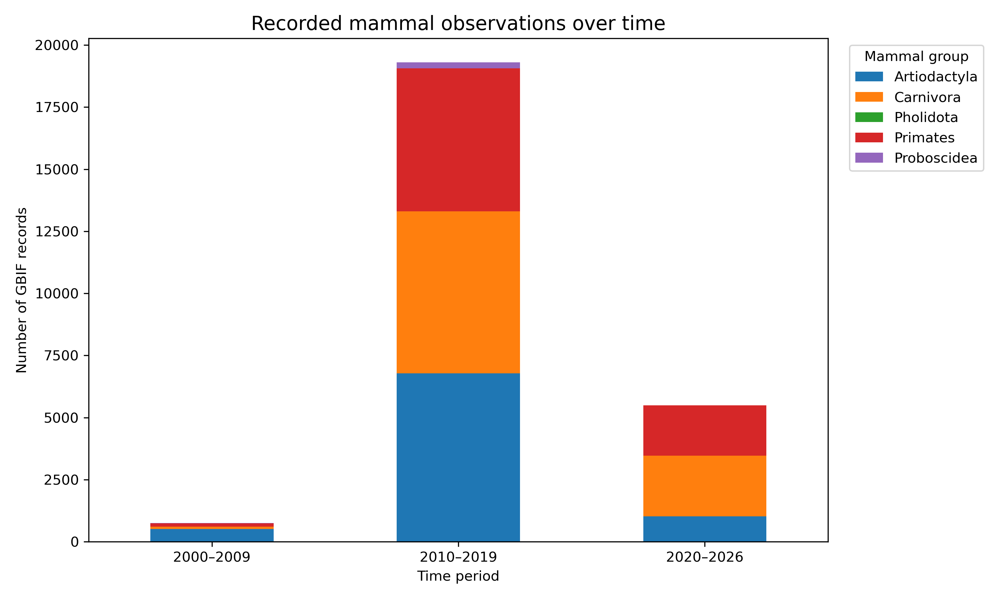

Cartographic Reflection
My exercise 1 map shows the building footprint share of land area by small district in Helsinki. The main pattern is quite clear. The highest values are mostly in central and southern Helsinki, where the urban structure is denser. Many outer areas have lower values. I think the orange colour scale works quite well, because darker colours clearly show areas with a higher building footprint share.
Now later, when I inspect the map, it has some good choices. The colours fit the theme, and the inset map helps the reader understand where Helsinki is located in Finland. I also wanted to create the map with Python instead of QGIS. This was useful for learning, but it also made the design process more challenging. I spent quite a lot of time on the technical workflow, and because of that I had less time for the final visualization.
The layout could be improved in many ways. The map has too much empty space, and the main map could be larger. The title, legend, source text, and other labels could also be more visible. Some map elements, such as the legend, scale bar, north arrow, and inset map, could be placed more carefully so that the whole layout feels tighter and more balanced.
If I made this map again, I would spend more time on the visual design. I would make the main map larger, improve the text hierarchy, test the classification more carefully, and place the map elements in a cleaner way. This exercise showed me that a technically correct map is not enough. A good map also needs to guide the reader clearly. In the future, if I have to make maps frequently, I think it would be useful to have ready-made design code sets, so I do not need to start from zero every time. I think one of my biggest understandings was that my eyes get blind really quickly when I work on the same map for a long time.

Description of Data
This project uses mammal occurrence records downloaded from GBIF.org. The study area includes mainland Southeast Asia: Thailand, Cambodia, Vietnam, Laos, and Myanmar.
The original dataset included all Mammalia records, but the analysis focuses on selected mammal groups that are especially relevant for forest environments and conservation. These groups include Carnivora (carnivores, such as cats, bears and civets), Primates (monkeys, apes and gibbons), Artiodactyla (hoofed mammals, such as deer, wild cattle and pigs), Proboscidea (elephants), and Pholidota (pangolins).
These groups interested me because many of them are connected to forests, protected areas and conservation questions. They also include several well-known or threatened mammals, such as elephants, gibbons, bears and pangolins. This made the dataset more interesting than looking at all mammal records together.
The dataset contains species names, coordinates, observation years, record types, and taxonomic information. The records are interpreted as documented observations, not as a complete map of actual species distributions.
Geospatial Narrative
1. Where are mammal records concentrated?
The first part of the analysis explores how mammal records are distributed across mainland Southeast Asia. This helps reveal broad spatial patterns and differences between countries.

The figure shows that the dataset is not evenly distributed across the study area. Cambodia and Thailand have the highest number of records, especially for primates, carnivores, and hoofed mammals. Laos and Myanmar have much fewer records. This does not necessarily mean that these countries have fewer mammals. It may also reflect differences in research activity, accessibility, protected area monitoring, and data availability.
2. Which mammal groups dominate the dataset?
The second part compares the main mammal groups in the dataset. This shows whether the data is dominated by primates, carnivores, hoofed mammals, elephants, or pangolins.

This chart shows that the dataset is dominated by a small number of species. Some primates and hoofed mammals have many records, while many rare carnivores and pangolins have fewer records. Because of this, the final maps should focus on species with enough data, not only on the most famous animals.
Scientific names of the species shown in Figure 2
| Common name | Scientific name |
|---|---|
| Black-shanked douc | Pygathrix nigripes |
| Wild boar | Sus scrofa |
| Red muntjac | Muntiacus muntjak |
| Long-tailed macaque | Macaca fascicularis |
| Northern pig-tailed macaque | Macaca leonina |
| Common palm civet | Paradoxurus hermaphroditus |
| Large-spotted civet | Viverra megaspila |
| Sambar deer | Rusa unicolor |
| White-handed gibbon | Hylobates lar |
| Golden jackal | Canis aureus |
| Lesser mouse-deer | Tragulus kanchil |
| Dusky leaf monkey | Trachypithecus obscurus |
| Domestic cat | Felis catus |
| Grey wolf / domestic dog | Canis lupus |
| Asian elephant | Elephas maximus |
3. How do selected species differ spatially?
The next step focuses on selected species that have enough records for visual analysis. These may include elephants, banteng, sambar deer, gibbons, doucs, and sun bears.

The map shows that the selected species records are not evenly distributed across the region. Many records are concentrated in Cambodia and Thailand, while Laos, Myanmar, and Vietnam have fewer records. This pattern may partly reflect species ecology, but it also shows differences in data collection, accessibility, and research activity.
The map should not be interpreted as the true distribution of these species. It shows documented GBIF records, not all places where the species occur.
4. How have recorded observations changed over time?
The temporal analysis shows changes in recorded observations over time. This does not directly show population change, but it helps understand how documentation has changed.

The number of records is much higher in the most recent period. This does not mean that mammal populations have increased. It more likely reflects changes in data collection, monitoring, digitization, and availability of biodiversity records.
Because of this, the temporal pattern should be interpreted as a change in documented records, not as a direct ecological trend.
Conclusions
The visualizations show that GBIF mammal records are not evenly distributed in mainland Southeast Asia. Cambodia and Thailand have many more records than Laos, Myanmar, and Vietnam. This does not directly mean that these countries have more mammals. It can also reflect differences in research activity, monitoring, accessibility, and data availability.
The species chart shows that the dataset is dominated by a small number of species. Some primates and hoofed mammals have many records, while many rare carnivores and pangolins have fewer records. Because of this, the map focuses on selected species with enough data for visual analysis.
The temporal chart shows that recent years have many more records than earlier periods. This should not be interpreted as population growth. It more likely shows changes in data collection, monitoring, digitization, and the availability of biodiversity records.
I originally planned to include an interactive map, but creating the GitHub repository, publishing the website with GitHub Pages, and learning the workflow took more time than expected. Because of this, the portfolio is more limited than planned and focuses on static visualizations. Still, the project helped me understand how maps, charts, and a simple web page can be combined into a geospatial narrative.